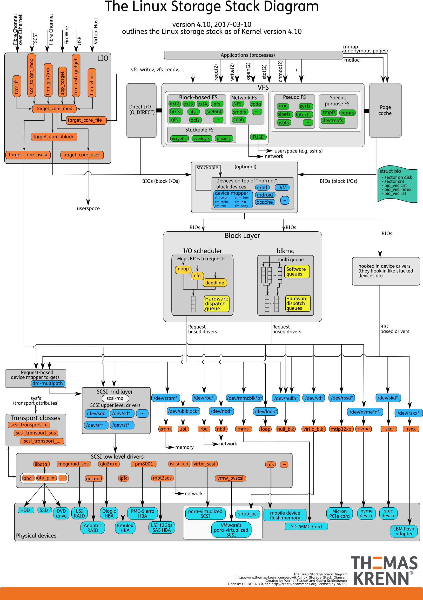

磁盘
磁盘是可以持久化存储的设备，根据存储介质的不同，常见磁盘可以分为两类：机械磁盘和固态磁盘。
- 第一类，机械磁盘，也称为硬盘驱动器（Hard Disk Driver），通常缩写为 HDD。机械磁盘主要由盘片和读写磁头组成，数据就存储在盘片的环状磁道中。在读写数据前，需要移动读写磁头，定位到数据所在的磁道，然后才能访问数据。
- 第二类，固态磁盘（Solid State Disk），通常缩写为 SSD，由固态电子元器件组成。固态磁盘不需要磁道寻址，所以，不管是连续 I/O，还是随机 I/O 的性能，都比机械磁盘要好得多。
无论机械磁盘，还是固态磁盘，相同磁盘的随机 I/O 都要比连续 I/O 慢很多
- 对机械磁盘来说，我们刚刚提到过的，由于随机 I/O 需要更多的磁头寻道和盘片旋转，它的性能自然要比连续 I/O 慢。
- 而对固态磁盘来说，虽然它的随机性能比机械硬盘好很多，但同样存在“先擦除再写入”的限制。随机读写会导致大量的垃圾回收，所以相对应的，随机 I/O 的性能比起连续 I/O 来，也还是差了很多。
- 机械磁盘的最小读写单位是扇区，一般大小为 512 字节。
- 而固态磁盘的最小读写单位是页，通常大小是 4KB、8KB 等。
磁盘按照接口来分类
- IDE（Integrated Drive Electronics）
- SCSI（Small Computer System Interface）
- SAS（Serial Attached SCSI）
- SATA（Serial ATA）
- FC（Fibre Channel） 不同的接口，往往分配不同的设备名称
磁盘整列：是把多块磁盘组合成一个逻辑磁盘，构成冗余独立磁盘阵列，也就是 RAID（Redundant Array of Independent Disks），从而可以提高数据访问的性能，并且增强数据存储的可靠性。
根据容量、性能和可靠性需求的不同，RAID 一般可以划分为多个级别，如 RAID0、RAID1、RAID5、RAID10 等。
- RAID0 有最优的读写性能，但不提供数据冗余的功能。
- 而其他级别的 RAID，在提供数据冗余的基础上，对读写性能也有一定程度的优化。
【磁盘实际上是作为一个块设备来管理的】
通用块层
通用块层，其实是处在文件系统和磁盘驱动中间的一个块设备抽象层。它主要有两个功能 。
- 第一个功能跟虚拟文件系统的功能类似。向上，为文件系统和应用程序，提供访问块设备的标准接口；向下，把各种异构的磁盘设备抽象为统一的块设备，并提供统一框架来管理这些设备的驱动程序。
- 第二个功能，通用块层还会给文件系统和应用程序发来的 I/O 请求排队，并通过重新排序、请求合并等方式，提高磁盘读写的效率。
Linux 内核支持四种 I/O 调度算法，分别是 NONE、NOOP、CFQ 以及 DeadLine。
第一种 NONE ，更确切来说，并不能算 I/O 调度算法。因为它完全不使用任何 I/O 调度器，对文件系统和应用程序的 I/O 其实不做任何处理，常用在虚拟机中（此时磁盘 I/O 调度完全由物理机负责）。
第二种 NOOP ，是最简单的一种 I/O 调度算法。它实际上是一个先入先出的队列，只做一些最基本的请求合并，常用于 SSD 磁盘。
第三种 CFQ（Completely Fair Scheduler），也被称为完全公平调度器，是现在很多发行版的默认 I/O 调度器，它为每个进程维护了一个 I/O 调度队列，并按照时间片来均匀分布每个进程的 I/O 请求。
最后一种 DeadLine 调度算法，分别为读、写请求创建了不同的 I/O 队列，可以提高机械磁盘的吞吐量，并确保达到最终期限（deadline）的请求被优先处理。DeadLine 调度算法，多用在 I/O 压力比较重的场景，比如数据库等。
I/O 栈
把 Linux 存储系统的 I/O 栈，由上到下分为三个层次，分别是文件系统层、通用块层和设备层。

- 文件系统层，包括虚拟文件系统和其他各种文件系统的具体实现。它为上层的应用程序，提供标准的文件访问接口；对下会通过通用块层，来存储和管理磁盘数据。
- 通用块层，包括块设备 I/O 队列和 I/O 调度器。它会对文件系统的 I/O 请求进行排队，再通过重新排序和请求合并，然后才要发送给下一级的设备层。
- 设备层，包括存储设备和相应的驱动程序，负责最终物理设备的 I/O 操作。
存储系统的 I/O ，通常是整个系统中最慢的一环。所以， Linux 通过多种缓存机制来优化 I/O 效率。